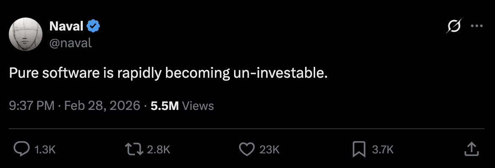

The business of Business Software
When Naval says something, everyone pays attention:

But, hear me out.
No software business is ‘pure software’.
It is software bundled with SLAs, customer service, assumption of liability, partnerships, etc. While software is always the first component in the bundle, it often doesn’t remain the primary.
But that first component used to be hard to get in place, requiring a ‘minimum viable narrative’ (to acquire capital and talent) and — most of all — time.
With both those preconditions rendered moot, the main thing that changes is how much competition software businesses will see, and how fast that competition will spring up.
So the question isn’t whether you are a ‘pure software’ business or not, but:
- Can you withstand competition and margin pressure
- What is the ROIC you have to deliver to your investors
The ground is rapidly shifting in the following ways:
1. PRODUCT: Making software is shifting to two distinct categories:
(a) making software that makes the software: everything from the models to coding agents to various tools and infra to support increasing code generation activity.
(b) making software that makes the users: special purpose agents, general agents like OpenClaw, and agent harnesses. These agents are the users now, using software on our behalf.
2. ECONOMICS: SaaS is becoming a low margin, commodity play.
While your customers are not going to vibe-code their own tools, they will be flooded with a hundred copycats to choose from, each pricing a dollar less than the next. It’ll be like manufacturing another energy bar or athleisure pants. They can be viable businesses but have different economics and need different strategies to succeed than TradSaaS.
3. DISTRIBUTION: Distribution channels are becoming critical way earlier, and new channels are emerging.
TradSaaS was primarily a direct-sold product — from founder-led sales in the early days to inhouse marketing and sales teams shortly after. Channel partnerships came into play much later. This was partly due to product being more important than distribution, and partly due to distribution channels not being very mature for software — AWS / GCP / etc marketplaces being examples of the few mature channels that could scale.
Contrast this with food or apparel products immediately angling for grocery store aisle placement and retailer partnerships.
We have the software ‘grocery stores’ being created in the form of OpenClaw-like agents. When YC says “build something agents want”, this is exactly what they are referring to.
4. CAPITAL: Your capital markets strategy cannot ignore the new economics of software.
When building a pure software company today, should you work backwards from a 10x return in 7 years, and commit to a series of milestones leading to that outcome? Capital markets are typically lagging, so there will be VCs that will fund your series A. They have their own deployment and TVPI commitments to their LPs to deliver on. This will likely lead to a painful resetting of expectations on either side in a few years.
There was a wave of D2C startups in the 2010s, sparked by the success of Bonobos and a brief arbitrage window on new online ad platforms and marketing tools, that learnt the hard lesson of having the right capital markets strategy.
There are no playbooks in these 4 areas any more. If you’re thinking about or experimenting in any of these areas, it would be fun to chat — do reach out!